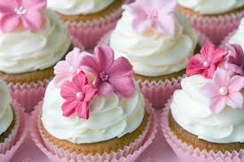

home
Cupcakes

Traditional cupcakes are always a crowd-pleaser.
Ingredients:
2 cups self-raising flour, sifted
3/4 cup CSR Caster Sugar
2 eggs, beaten
3/4 cup milk
125g butter, melted, cooled
1 teaspoon vanilla essence
Sprinkles, to decorate
1 1/2 cups CSR Pure Icing Sugar
1-1 1/2 tablespoons water
food colouring, optional
Method:
Preheat oven to
200°C
or
180°C
fan-forced.
Grease a 12 x 1/3-cup capacity muffin pan. Alternatively, line holes with paper cases.
Combine flour and caster sugar in a bowl. Make a well in the centre.
Add milk, butter, eggs and vanilla to flour mixture. Using a large metal spoon, stir gently to combine.
Spoon mixture into prepared muffin pan. Bake for 12 to 15 minutes, or until a skewer inserted into the centre comes out clean.
Stand in pan for 5 minutes before transferring to a wire rack to cool.
Make icing:
Sift icing sugar into a bowl.
Add food colouring and water.
Stir until smooth and well combined.
Spoon icing over cupcakes.
Decorate with sprinkles.